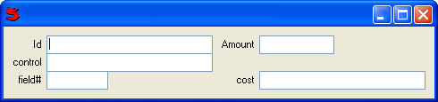

(item [, item ...], overlap = true)
Takes a list of controls and produces a layout. 'nl' (new line) items are used to mark the ends of lines.
Form aligns controls based on their baseline (using their Top value). This is primarily useful for text e.g.
align align
The major feature of FormControl is that it allows controls to be lined up in vertical groups, which do not have to be contiguous. For example:
Window(#(Border (Form
(id group: 0) (amount group: 1) nl
(control group: 0) nl
(field group: 0) (cost group: 1))))
Produces:
Note: Rows are overlapped by one pixel to eliminate the double line between fields. Use 'nL' instead of 'nl' to turn this off for a single row. Or use overlap:false to not overlap any row in the form.
Note: Form does not handle stretchable controls. It ignores the stretch on its child controls and simply sizes them by their xmin and ymin.